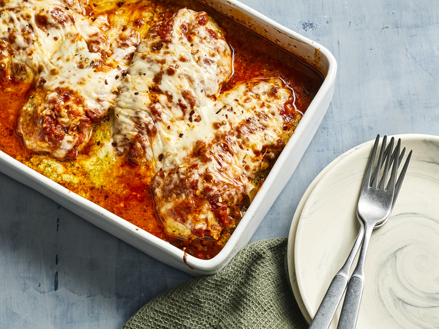

Lasagna-Stuffed Chicken

Description
It's no mystery why this fun stuffed
chicken recipe was a huge hit in our
test kitchen: Comforting classic
Italian flavors shine here, while
the creamy mozzarella balances the
acidic tomato sauce nicely. Plus,
the pocket of cheesy pesto keeps the
chicken moist during the cooking
process. These stuffed chicken
breasts come together quickly and
easily, making them perfect for busy
weeknights.
Ingredients
- 1 cup marinara sauce (from 1 [24-oz.] jar), divided
- ¾ cup whole-milk ricotta cheese (from 1 [16-oz.] container)
- ¼ cup refrigerated basil pesto (from 1 [6-oz.] jar)
- ¼ teaspoon crushed red pepper (optional)
- 1 ¼ teaspoons kosher salt, divided
- 4 (8-oz.) boneless, skinless chicken breasts, trimmed
- 1 teaspoon dried Italian seasoning
- 4 ounces mozzarella cheese, shredded (about 1 cup)
Steps
-
Preheat oven to 375°F with rack
7 inches from heat source.
Spread 1/2 cup of the marinara
evenly in bottom of a broiler-safe
11- x 7-inch baking dish.
-
Stir together ricotta, pesto,
crushed red pepper, and
1/4 teaspoon of the salt in a
medium bowl.
-
Season chicken evenly on both
sides with Italian seasoning and
remaining 1 teaspoon salt. Slice
each chicken breast in half
horizontally, cutting to but not
through the other side. Working
with 1 chicken breast at a time,
open breast halves like a book,
and spread 1 side with 1/4 cup
ricotta mixture. Fold chicken
breast back up, and secure with
wooden picks. Arrange chicken
evenly on top of marinara in
baking dish. Spread chicken
evenly with remaining 1/2 cup
marinara; sprinkle with mozzarella.
-
Cover baking dish with aluminum
foil. Bake in preheated oven until
a thermometer inserted into
thickest portion of chicken
registers 165°F, 30 to 35 minutes.
Remove baking dish from oven;
remove foil, and remove wooden
picks from chicken. Increase oven
temperature to broil. Return baking
dish to oven. Broil until
mozzarella is melted, golden,
and bubbling, 3 to 5 minutes.
Let rest 5 minutes. Serve.